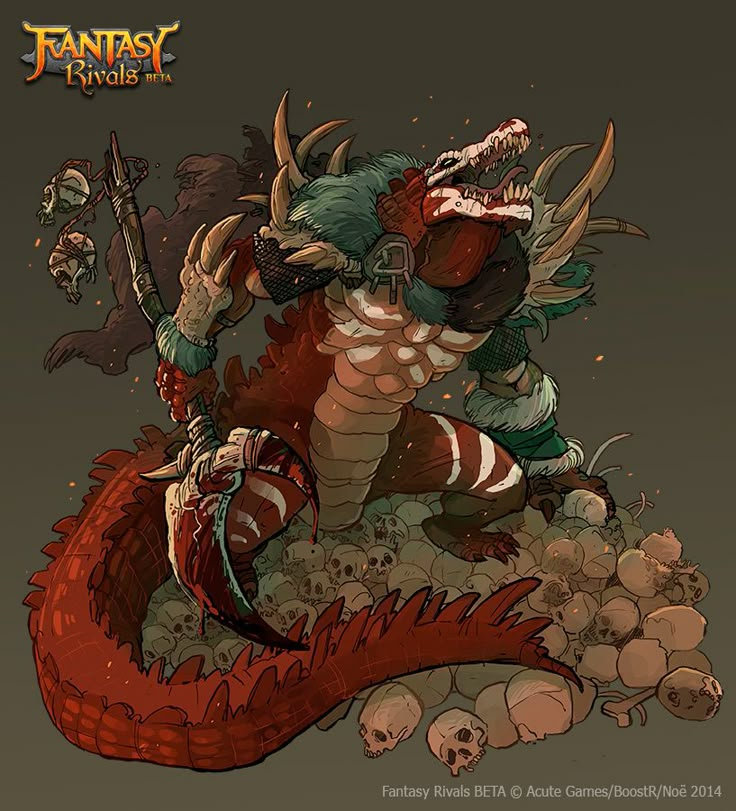
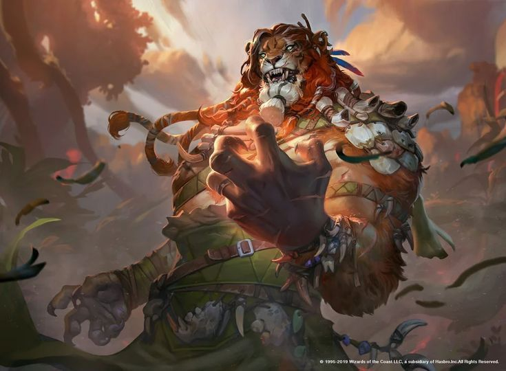
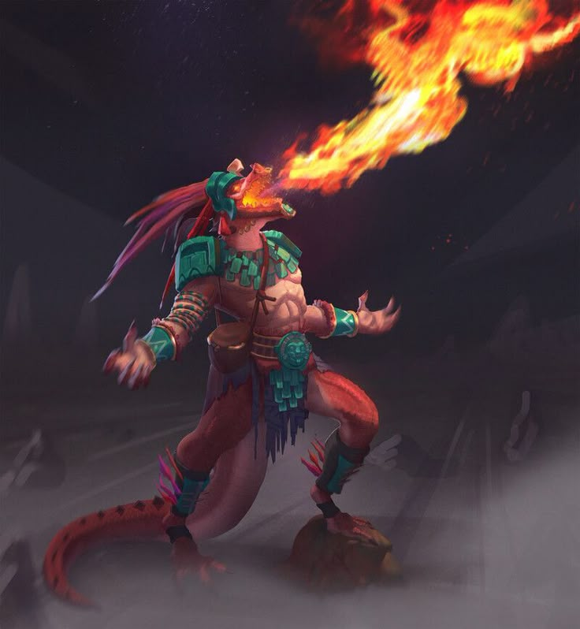
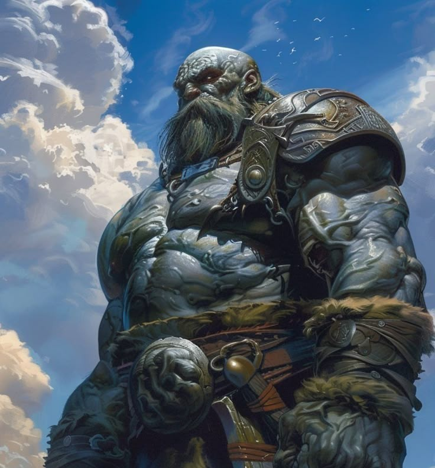

Fúria. Começando no momento que você escolhe esse caminho no 3° nível, você pode entrar num frenesi quando estiver em fúria. Se você desejar, pela duração da sua fúria, você pode realizar um único ataque corpo-a-corpo com arma, com uma ação bônus, em cada um de seus turnos após esse. Quando sua fúria acabar, você sofrerá um nível de exaustão (como descrito no apêndice A).
Em batalha, você luta com uma ferocidade primitiva. No
seu turno, você pode entrar em fúria com uma ação
bônus.
Enquanto estiver em fúria, você recebe os seguintes
benefícios se você não estiver vestindo uma armadura
pesada:
- Você tem vantagem em testes de Força e testes de
resistência de Força.
- Quando você desferir um ataque com arma corpo-acorpo usando Força, você recebe um bônus nas jogadas
de dano que aumenta à medida que você adquire
níveis de bárbaro, como mostrado na coluna Dano de
Fúria na tabela O Bárbaro.
- Você possui resistência contra dano de concussão,
cortante e perfurante.
Se você for capaz de conjurar magias, você não poderá
conjurá-las ou se concentrar nelas enquanto estiver em
fúria.
Sua fúria dura por 1 minuto. Ela termina
prematuramente se você cair inconsciente ou se seu turno
acabar e você não tiver atacado nenhuma criatura hostil
desde seu último turno ou não tiver sofrido dano nesse
período. Você também pode terminar sua fúria no seu
turno com uma ação bônus.
Quando você tiver usado a quantidade de fúrias
mostrada para o seu nível de bárbaro na coluna Fúrias da
tabela O Bárbaro, você precisará terminar um descanso
longo antes de poder entrar em fúria novamente.
Defesa Sem Armadura Quando você não estiver vestindo qualquer armadura,
sua Classe de Armadura será 10 + seu modificador de
Destreza + seu modificador de Constituição. Você pode
usar um escudo e continuar a receber esse benefício.
Ataque Descuidado A partir do 2° nível, você pode desistir de toda
preocupação com sua defesa para atacar com um
desespero feroz. Quando você fizer o seu primeiro ataque
no turno, você pode decidir atacar descuidadamente.
Fazer isso lhe concede vant/agem nas jogadas de ataque
com armas corpo-a-corpo usando Força durante seu turno,
porém, as jogadas de ataques feitas contra você possuem
vantagem até o início do seu próximo turno.
Ataque Descuidado A partir do 2° nível, você pode desistir de toda
preocupação com sua defesa para atacar com um
desespero feroz. Quando você fizer o seu primeiro ataque
no turno, você pode decidir atacar descuidadamente.
Fazer isso lhe concede vant/agem nas jogadas de ataque
com armas corpo-a-corpo usando Força durante seu turno,
porém, as jogadas de ataques feitas contra você possuem
vantagem até o início do seu próximo turno.
Sintido De Perigo No 2° nível, você adquire um sentido sobrenatural de
quando as coisas próximas não estão como deveriam,
concedendo a você uma chance maior quando estiver
evitando perigos.
Você possui vantagem em testes de resistência de
Destreza contra efeitos que você possa ver, como
armadilhas e magias. Para receber esse benefício você não
pode estar cego, surdo ou incapacitado.
Ataque Extra A partir do 5° nível, você pode atacar duas vezes, ao invés
de uma, sempre que você realizar a ação de Ataque no seu turno.
Movimento Rápido Começando no 5° nível, seu deslocamento aumenta em 3
metros enquanto você não estiver vestindo uma armadura pesada.
Instinto Selvagem No 7° nível, seu instinto está tão apurado que você recebe
vantagem nas jogadas de iniciativa.
Além disso, se você estiver surpreso no começo de um
combate e não estiver incapacitado, você pode agir
normalmente no seu primeiro turno, mas apenas se você
entrar em fúria antes de realizar qualquer outra coisa
neste turno.
Crítico Brutal A partir do 9° nível, você pode rolar um dado de dano de
arma adicional quando estiver determinando o dano extra
de um acerto crítico com uma arma corpo-a-corpo.
Isso aumenta para dois dados adicionais no 13° nível e três dados adicionais no 17° nível.
Fúria Implacável A partir do 11° nível, sua fúria pode manter você lutando
independente da gravidade dos seus ferimentos. Se você
cair para 0 pontos de vida enquanto estiver em fúria e
não morrer, você pode realizar um teste de resistência de
Constituição CD 10. Se você for bem sucedido, você volta
para 1 ponto de vida ao invés disso.
Cada vez que você utilizar essa característica após a
primeira, a CD aumenta em 5. Assim que você terminar
um descanso curto ou longo a CD volta para 10.
Fúria Persistente A partir do 15° nível, sua fúria é tão brutal que ela só
termina prematuramente se você cair inconsciente ou se você decidir terminá-la.
Força Indomável A partir do 18° nível, se o total de um teste de Força seu
for menor que o seu valor de Força, você pode usar esse
valor no lugar do resultado.
Campeão Primitivo No 20° nível, você incorpora os poderes da natureza. Seus
valores de Força e Constituição aumentam em 4. Seu
máximo para esses valores agora é 24.
Caminho Do Furioso (Bárbaro) - Livro do jodador
Para alguns bárbaros, a fúria é um meio para um fim – esse fim é a violência. O Caminho do Furioso é um caminho de fúria livre, entumecido em sangue. A medida que você entra na fúria de um furioso, você vibra no caos da batalha, despreocupado com a sua própria saúde ou bem-estar.
Frenesi. Começando no momento que você escolhe esse caminho no 3° nível, você pode entrar num frenesi quando estiver em fúria. Se você desejar, pela duração da sua fúria, você pode realizar um único ataque corpo-a-corpo com arma, com uma ação bônus, em cada um de seus turnos após esse. Quando sua fúria acabar, você sofrerá um nível de exaustão (como descrito no apêndice A).
Fúria Inconsciente A partir do 6° nível, você não pode ser enfeitiçado ou amedrontado enquanto estiver em fúria. Se você estava enfeitiçado ou amedrontado quando entrou em fúria, o efeito é suspenso pela duração da fúria.
Presença Intimidante A partir do 10° nível, você pode usar sua ação para
amedrontar alguém com sua presença intimidante. Quando o fizer, escolha uma criatura que você possa ver a 9 metros. Se a criatura puder ver ou ouvir você, ela deve
ser bem sucedida num teste de resistência de Sabedoria (CD igual a 8 + seu bônus de proficiência + seu
modificador de Carisma) ou ficara com medo de você até o fim do seu próximo turno. Nos turnos seguintes, você
pode usar sua ação para estender a duração desse efeito na criatura amedrontada até o início do seu próximo turno. Esse efeito termina se a criatura terminar seu
turno fora da sua linha de visão ao a mais de 18 metros Se a criatura for bem sucedida no teste de resistência,
você não poderá usar essa característica nessa criatura novamente por 24 horas. de você.
Retaliação A partir do 14° nível, quando você sofrer dano de uma
criatura que esteja a até 1,5 metro de você, você pode usar
sua reação para realizar um ataque corpo-a-corpo com
arma contra essa criatura.
Caminho Do Guerreiro Totêmico (Bárbaro) - Livro do jodador
O Caminho do Guerreiro Totêmico é uma jornada espiritual, à partir do momento que o bárbaro aceita um espirito animal como seu guia, protetor e inspiração.
Em batalha, seu espirito totêmico preenche você com força sobrenatural, adicionando combustível mágico a sua fúria bárbara. A maioria das tribos bárbaras consideram que um animal totêmico possui parentesco a um clã em
particular. Em tais casos, é incomum a um indivíduo
possuir mais de um espirito animal totêmico, apesar de existirem exceções.
Conselheiro Espiritual Seu caminho é buscar a sintonia com o mundo natural,
concedendo a você uma afinidade com as bestas. A partir
do 3° nível, quando você toma esse caminho, você recebe a
habilidade de conjurar as magias sentido bestial e falar com animais, mas apenas na forma de rituais, como
descrito no capítulo 10.
Totem Espiritual A partir do 3° nível, quando você adota esse caminho,
você escolhe um totem espiritual e ganha suas
características. Você deve fazer ou adquirir um objeto
físico como totem – um amuleto ou adorno similar – que
incorpora o pelo ou penas, garras, dente ou ossos do
animal totêmico. Se você quiser, você também adquire
pequenos atributos físicos que o assemelham ao seu totem
espiritual. Por exemplo, se você tiver o totem espiritual do
urso, você seria incomumente peludo e de pele grossa, ou
se o seu totem for a águia, seu olhos teriam um brilho
amarelado.
Seu totem animal deve ser um animal relacionado aos
listados aqui, mas pode ser um mais apropriado a sua
terra natal. Por exemplo, você poderia escolher falcão ou
abutre ao invés de águia.
Águia. Quando estiver em fúria e não estiver vestindo
uma armadura pesada, as outras criaturas terão
desvantagem nas jogadas de ataque de oportunidade
contra você e você pode usar a ação de Disparada como
uma ação bônus no seu turno. O espirito da águia torna
você um predador que pode vagar pelo meio da briga com
facilidade.
Lobo. Quando estiver em fúria, seus amigos tem
vantagem nas jogadas de ataque corpo-a-corpo realizadas
contra qualquer criatura a 1,5 metro de você que seja
hostil a você. O espirito do lobo transforma você em um
líder de caça.
Urso. Quando em fúria, você adquire resistência a
todos os tipos de dano, exceto dano psíquico. O espirito do
urso torna você vigoroso o suficiente para permanecer de
pé diante de qualquer castigo.
Aspecto Da Besta No 6° nível, você adquire um benefício místico baseado no
totem que você escolheu. Você pode escolher o mesmo
animal que selecionou no 3° nível ou um diferente.
Águia. Você ganha a visão aguçada de uma águia.
Você pode ver a até 1,6 km sem dificuldade, sendo capaz
de discernir até os menores detalhes quando estiver
olhando para algo a menos de 30 metros de você. Além
disso, penumbra não impõem desvantagem nos seus
testes de Sabedoria (Percepção).
Lobo. Você ganha a sensibilidade predatória de um
lobo. Você pode rastrear outras criaturas quando estiver
viajando a passo rápido e você pode se mover
furtivamente quando estiver viajando a passo normal
(veja o capítulo 8 para as regras de passo de viagem).
Urso. Você ganha a força de um urso. Sua capacidade
de carga (incluindo carga máxima e capacidade de erguer)
é dobrada e você tem vantagem em testes de Força
realizados para empurrar, puxar, erguer ou quebrar
objetos.
Andarilho Espiritual No 10° nível, você pode conjurar a magia comunhão com a natureza, mas apenas como um ritual. Quando o fizer,
uma versão espiritual de um dos animais que você
escolheu como Totem Espiritual ou Aspecto da Besta
aparece para você para transmitir a informação que você
busca.
Sintonia Totêmica No 14° nível, você ganha um benefício magico baseado em
um totem animal, à sua escolha. Você pode escolher o
mesmo animal que selecionou anteriormente ou um
diferente.
Águia. Quando estiver em fúria, você adquire um
deslocamento de voo igual ao seu deslocamento de
caminhada. Esse benefício funciona apenas em pequenos
explosões: você cai se terminar seu turno no ar e não tiver
nada em que possa se agarrar.
Lobo. Quando estiver em fúria, você pode usar uma
ação bônus no seu turno para derrubar uma criatura
Grande ou menor no chão quando você atingi-la com um
ataque corpo-a-corpo com arma.
Urso. Quando estiver em fúria, qualquer criatura a
até 1,5 metro de você que for hostil a você terá
desvantagem nas jogadas de ataque contra outros alvos
além de você ou outro personagem com essa
característica. Um inimigo é imune a esse efeito se ele
não puder ver ou ouvir você ou caso ele não possa ser
amedrontado.
Caminho Do Guardião Ancestral (Bárbaro) - Xanathar
Alguns bárbaros saem de culturas que reverenciam seus antepassados. Essas tribos ensinam que os guerreiros do passado permanecem no mundo como espíritos poderosos, que podem guiar e proteger a
vida. Quando um bárbaro que segue este caminho se aguda, o bárbaro entra em contato com o mundo espiritual e convida esses espiritos guardiões para ajuda.
Os bárbaros que se empenham em seus guardiões
ancestrais podem lutar melhor para proteger suas
tribos e seus aliados. A fim de consolidar os vínculos
com seus guardiões ancestrais, os bárbaros que
seguem esse caminho cobrem-se em tatuagens
elaboradas que celebram atos de seus antepassados.
Essas tatuagens contam sagas de vitórias contra
monstros terríveis e outros rivais temíveis.
Protetor Ancestral Começando quando você escolhe esse caminho no
3º nível, os guerreiros espectrais aparecem quando
você entra em fúria. Enquanto você está em fúria, a
primeira criatura que você acertou com um ataque
no seu turno torna-se o alvo dos guerreiros, o que
dificulta seus ataques . Até o início do seu próximo
turno, esse alvo tem desvantagem em qualquer jogada
de ataque que não seja contra você, e quando o alvo
atingir uma criatura diferente de você com um ataque,
essa criatura tem resistência ao dano causado pelo
ataque. O efeito sobre o alvo acaba mais cedo se sua
fúria termina.
Escudo Espiritual Começando no 6° nível, os guardiões espirituais que te
protegem podem prover uma defesa sobrenatural para
aqueles que você defende. Se você estiver em fúria e
outra criatura que possa ver a até 9 metros receba dano, você pode usar sua reação para reduzir esse
dano em 2d6. Quando você atinge determinados níveis nesta classe, pode reduzir este dano ainda mais : em 3d6 no 10° nível e em 4d6 no 14° nível.
Consultar Espíritos No 10º nível você ganha a habilidade de se consultar com seus espíritos ancestrais . Quando você o faz,
pode conjurar as magias augúrio ou clarividência sem usar espaços de magia ou componentes materiais.
Em vez de criar um sensor esférico, esse uso da
clarividência invoca invisivelmente um de seus
espíritos ancestrais para o local escolhido. Sabedoria é
a sua habilidade para conjurar essa magia. Depois de conjurar qualquer magia desta forma,
você não pode usar essa característica novamente até
terminar um descanso curto ou longo.
Ancestrais Vingativos No 14º nível, seus espíritos ancestrais aumentam de
poder o suficiente e conseguem retaliar. Quando você
usa seu escudo espiritual para reduzir o dano de um
ataque, o atacante recebe uma quantidade de dano de
energia igual ao dano que seu escudo espintual.
Caminho Do Arauto Da Tempestade (Bárbaro) - Xanathar
Todos os bárbaros abrigam uma fúria interior.
Sua fúria lhes garante superioridade em força,
durabilidade e velocidade. Bárbaros que seguem
o Caminho do Arauto da Tempestade aprendem
a transformar essa fúria em um manto de magia
primal, que permeia envolta dele. Quando em fúria
um bárbaro desse caminho toca as forças da natureza
para criar poderosos efeitos mágicos.
Arautos da tempestade são típicos campeões de elite
que treinam junto a druidas, patrulheiros, e quaisquer
outros que jurem proteger a natureza. Outros
arautos da tempestade aprimoram suas capacidades
em cabanas destruídas por tempestades, em picos
congelados nos confins do mundo, ou nos mais
profundos desertos escaldantes.
Aura Da Tempestade Começando no 3º nível, você emana uma aura
tempestuosa e mágica enquanto você se enfurece.
A aura se estende a 3 metros de você em todas as
direções, mas não através da cobertura total.
Sua aura tem um efeito que se ativa quando
você entra na sua fúria, e você pode ativar o efeito
novamente em cada um dos seus turnos como uma
ação bônus. Escolha entre deserto, mar ou tundra.
O efeito da aura depende do ambiente escolhido,
conforme detalhado abaixo. Você pode alterar sua
escolha de ambiente sempre que você ganha um nível
nesta classe.
Se os efeitos da sua aura exigirem um teste
de resistência, a CD é igual a 8 + seu bônus de
proficiência + seu modificador de Constituição.
Deserto. Quando este efeito é ativado, todas as
outras criaturas em sua aura recebem 2 de dano de
fogo cada. O dano aumenta quando você alcança
certos níveis nesta classe, aumentando para 3 no
5º nível, 4 no 10º nível, 5 no 15° nível e 6 no 20º nível.
Mar. Quando este efeito é ativado, você pode
escolher uma outra criatura que possa ver em sua
aura. O alvo deve fazer um teste de resistência de
Destreza. O alvo recebe 1d6 de dano elétrico em caso
de falha ou metade de dano se bem-sucedido. O dano aumenta quando você alcança certos níveis nesta
classe, aumentando para 2d6 no 10° nível, 3d6 no 15º nível e 4d6 no 20° nível.
Tundra. Quando este efeito é ativado, cada criatura
a sua escolha em sua aura ganha 2 pontos de vida
temporários, já que os espíritos se acostumão ao
sofrimento. Os pontos de vida temporários aumentam
quando você atinge certos níveis nesta classe,
aumentando para 3 no 5° nível, 4 no 10º nível, 5 no
15º nível e 6 no 20° nível.
Alma Da Tempestade No 6º nível, a tempestade lhe concede beneficios mesmo quando sua aura não está ativa. Os beneficios
são baseados no ambiente que você escolheu para sua
Aura da Tempestade.
Deserto. Você ganha resistência ao dano de fogo,
e não sofre os efeitos do calor extremo, conforme
descrito no Guia do Mestre. Além disso, como uma
ação, pode tocar em um objeto inflamável
que não esteja sendo usado ou transportado por ninguém e incendiá-lo.
Mar. Você ganha resistência ao dano elétrico, e pode respirar debaixo d'água. Você também ganha um deslocamento de natação de 9 metros.
Tundra. Você ganha resistência ao frio, e não sofre
os efeitos do frio extremo, conforme descrito no Guia
do Mestre. Além disso, como uma ação, pode tocar a
água e transformar um cubo de 1,5 metros em gelo,
que derrete após 1 minuto. Esta ação falha se uma
criatura estiver no cubo.
Tempestade Protetora No 10º nível, você aprende a usar seu domínio da
tempestade para proteger os outros. Cada criatura a sua escolha tem a resistência a dano que você ganhou
com o recurso Alma da Tempestade enquanto a criatura esteja em sua Aura da Tempestade.
Tempestade Furiosa No 14° nível, o poder da tempestade que você canaliza
cresce mais forte, atacando seus inimigos. O efeito é
baseado no ambiente que você escolheu para a Aura
de Tempestade.
Deserto. Imediatamente depois que uma criatura em sua aura acerta um ataque conta você, pode usar
sua reação para forçar essa criatura a fazer um de teste de resistência de Destreza. Em caso de falha, a
criatura recebe dano de fogo igual à metade do seu nível bárbaro.
Mar. Quando você atinge uma criatura em sua aura
com um ataque, pode usar sua reação para forçar
essa criatura a fazer um de teste de resistência de
Força. Em caso de falha, a criatura é derrubada, como
se tivesse sido atingido por uma onda.
Tundra. Sempre que o efeito de sua Aura da
Tempestade estiver ativado, pode escolher uma
criatura que possa ver na aura. Essa criatura deve ter
sucesso em um teste de resistência de Força, ou seu
deslocamento é reduzido para O até o início do seu
próximo turno, pois uma geada mágica o encobre.

Caminho Do Fanático (Bárbaro) - Xanathar
Algum as divindades inspiram seus seguidores a se lançarem em uma fúria selvagem. Esses bárbaros são fanáticos-guerreiros que canalizam sua fúria em espetaculares demonstrações de poder divino.
Uma variedade de deuses em todo o mundo de D&D inspiram seus seguidores a abraçar esse caminho. Tempus em Reinos Esquecidos e Hextor e Erythnul
de Greyhawk são exemplos excelentes. Em geral, os deuses que inspiram fanáticos são divindades de
combate, destruição e violência. Nem todos são maus, mas poucos são bons.
Fúria Divina. Começando quando escolher esse caminho no 3º nível,
você pode canalizar fúria divina em ataques de armas.
Enquanto você estiver furioso, a primeira criatura que
atingiu em cada um dos seus turnos com um ataque
de arma recebe dano extra igual a 1d6 + metade
do seu nível bárbaro. O dano extra é necrótico ou
radiante; você escolhe o tipo de dano quando adquire
essa característica.
Guerreiro Dos Deuses A partir do 6° nível, você não pode ser enfeitiçado ou amedrontado enquanto estiver em fúria. Se você estava enfeitiçado ou amedrontado quando entrou em fúria, o efeito é suspenso pela duração da fúria.
Foco Fanático A partir do 6° nível, o poder divino que abastece sua
fúria pode protegê-lo. Se você falhar em um teste de resistência enquanto estiver furioso, pode refazê-lo,
e deve usar o novo resultado. Você pode usar essa característica apenas uma vez por fúria.
Presença Zelosa No 10° nível, você aprende a canalizar o poder divino
para inspirar o fanatismo nos outros. Como uma ação bônus, você desencadeia um grito de batalha imbuído
com energia divina. Até dez outras criaturas de sua
escolha a até 18 metros que possam lhe ouvir ganham
vantagem em jogadas de ataque e testes de resistência até o inicio do seu próximo turno.
Depois de usar esta característica, você não pode usá-la novamente até terminar um descanso longo.
Fúria Além Da Morte A partir do 14° nível, o poder divino que alimenta
sua fúria permite que você ignore os golpes fatais. Enquanto estiver furioso, ter 0 pontos de vida não
o deixa inconsciente. Você ainda deve fazer testes de resistência contra morte, e sofre os efeitos normais de
receber dano enquanto estiver em 0 pontos de vida. No entanto, se você morreria devido a falhar nos testes de
resistência contra morte, não morre até que sua fúria termine, e só caso ainda esteja com 0 pontos de vida.

Caminho Da Besta (Bárbaro) - Tasha
Bárbaros que caminham pela Trilha da Besta tiram sua fúria
de uma centelha bestial que queima em suas almas. Essa
besta irrompe no auge da fúria, transformando fisicamente o
bárbaro.
Tais bárbaros podem ser possuídos por um espírito
primitivo ou serem descendentes de metamorfos. Você pode
escolher a origem de seu poder feral ou determinar isso
rolando na tabela de Origem da Besta.
Origem Da Besta 1 - Um de seus pais é um licantropo, e você herdou parte de sua maldição.
2 - Você é descendente de um arquidruida e herdou a habilidade de mudar de forma parcialmente.
3 - Um espírito feérico o presentou com a habilidade de adotar diferentes aspectos bestiais.
4 - O espírito de um animal ancestral vive dentro de você, permitindo que trilhe esse caminho.
Forma Da Besta A partir do 3° nível, Quando você entra em fúria, você pode se transformar,
revelando o poder bestial que há dentro de você. Até que a
fúria se encerre, você manifesta uma arma natural. Ela conta
como uma arma simples de ataque corpo a corpo para você, e
você adiciona seu modificador de Força às rolagens de ataque
e dano quando ataca com ela, como normalmente. Você
escolhe a forma da arma cada vez que entra em fúria:
Mordida. Sua boca se transforma em um focinho bestial
ou em grandes mandíbulas (a sua escolha). Isso provoca 1d8
de dano perfurante em um acerto. Uma vez por turno,
quando você causa dano em uma criatura com essa mordida,
você recupera uma quantia de pontos de vida igual ao seu
modificador de proficiência, desde que você esteja com
metade ou menos de seus pontos de vida totais no momento
do acerto.
Garras. Cada uma de suas mãos se transforma em uma pata
com garras que você pode utilizar como arma caso suas mãos
estejam livres. Isso provoca 1d6 de dano cortante em caso de
acerto. Uma vez por turno, quando você atacar com suas
garras usando a ação de Ataque, você pode realizar um
ataque de garra adicional como parte da mesma ação.
Cauda. Cresce uma cauda chicoteante e espinhosa em
você, que causa 1d8 de dano perfurante em um acerto e que
possui a propriedade de alcance. Se uma criatura a até 3m de
você e que esteja em seu campo de visão o acerta com uma
jogada de ataque, você pode utilizar a sua reação para golpear
com sua cauda e rolar um d8, aplicando um bônus em sua CA
equivalente ao valor rolado e fazendo com que o ataque
potencialmente o erre.
Alma Bestial No 6° nível, o poder feral dentro de você aumenta, fazendo com que a
arma natural da sua Forma Bestial conte como mágica para o
propósito de superar resistências e imunidades a ataques e danos não-mágicos. Você também pode alterar sua forma
para se adaptar aos seus arredores. Quando você finalizar
um descanso curto ou longo, escolha um dos seguintes
benefícios, que durará até que você termine seu próximo descanso, seja ele curto ou longo:
1 - Você adquire deslocamento de natação igual ao seu deslocamento terrestre, e você pode respirar debaixo da água.
2 - Você ganha deslocamento de escalada igual ao seu
deslocamento terrestre e você pode escalar superfícies
difíceis, incluindo ficar de cabeça para baixo em tetos,
sem a necessidade de realizar testes de habilidade.
3 - Quando você salta, você pode realizar um teste de Força
(Atletismo) e ampliar seu salto por uma quantia de metros
igual a um terço do resultado total. Você pode realizar
esse teste especial apenas uma vez por turno.
Fúria Contagiosa A partir do 10° nível, quando você acerta uma criatura com suas armas naturais
enquanto em fúria, a besta dentro de você pode amaldiçoar
seu alvo com uma raiva descontrolada. O alvo deve ser
bem-sucedido em uma salvaguarda de Sabedoria (CD igual a
8 + seu modificador de Constituição + seu bônus de
proficiência) ou sofrer um dos seguintes efeitos (a sua
escolha):
1 - O alvo deve usar sua reação para realizar um ataque corpo a corpo contra outra criatura a sua escolha que você possa ver.
2 - O alvo recebe 2d12 de dano psíquico. Você pode usar essa característica um número de vezes igual ao seu bônus de
proficiência, e você recupera todos os usos quando você terminar um descanso longo.
Chamado De Caça A partir do 14° nível, a besta dentro de você torna-se tão poderosa que você pode
espalhar sua ferocidade para os outros e adquirir resiliência
através daqueles que se juntarem a sua caçada. Quando você
entrar em fúria, você pode escolher uma quantia de outras
criaturas voluntárias dentro da sua visão a até 9m de você
igual ao seu modificador de Constituição (mínimo de uma
criatura). Você ganha 5 pontos de vida temporários para cada
criatura que aceitar essa característica. Até que a fúria se
encerre, cada uma das criaturas escolhidas pode utilizar o
seguinte benefício uma vez em cada um dos seus turnos:
Quando a criatura acertar um alvo com uma jogada de
ataque e provocar dano nele, a criatura pode rolar um d6 e
ganhar um bônus no dado igual ao valor rolado. Você pode
usar essa característica um número de vezes igual ao seu
bônus de proficiência, e você recupera todos os usos ao
terminar um descanso longo.

Caminho Da Magia Selvagem (Bárbaro) - Tasha
Muitos lugares no multiverso fervilham com beleza, emoção
intensa e rompantes de magia; Faéria, os Planos Superiores,
e outros mundos de poder sobrenatural irradiam com tais
forças e podem influenciar profundamente as pessoas. Como
seres intensos, bárbaros são especialmente suscetíveis a
essas influências imprevisíveis, com alguns deles sendo
transformados pela magia. Estes bárbaros inundados pela
magia seguem a Trilha da Magia Selvagem. Bárbaros elfos,
tiferinos, aasimares, e genasi frequentemente seguem esse
caminho, ansiosos por manifestar a magia transcendental de seus ancestrais.
Surto Selvagem A partir do 3° nível, a energia mágica remexendo-se dentro de você às vezes
irrompe de seu corpo. Quando você entra em fúria, role na
tabela de Magia Selvagem para determinar o efeito mágico
produzido. Se o efeito exigir uma salvaguarda, a CD é igual a
8 + seu bônus de proficiência + seu modificador de
Constituição.
Magia Selvagem 1d8 Efeito
1 - Tentáculos sombrios chicoteiam ao seu redor. Cada criatura a sua escolha em seu campo de visão e que
esteja a até 9m de você deve realizar uma salvaguarda de Constituição ou sofre 1d12 de dano
necrótico. Você também ganha 1d12 de pontos de vida temporários.
2 - Você se teleporta a até 9m para um espaço desocupado que você possa ver. Até que sua fúria
termine, você pode utilizar esse efeito novamente em cada um dos seus turnos com uma ação bônus.
3 - Um espírito intangível, parecido com um flumph ou uma pixie (a sua escolha), aparece a até 1,5m de distância de uma criatura a sua escolha em seu
campo de visão a até 9m de você. No final do turno atual, o espírito explode, e cada criatura a até 1,5m dele deve ser bem-sucedida em uma salvaguarda de
Destreza ou sofre 1d6 de dano de energia. Até que sua fúria acabe você pode utilizar esse efeito
novamente em cada um de seus turnos, invocando outro espírito com uma ação bônus.
4 - A magia infiltra-se em uma arma a sua escolha que você esteja empunhando. Até que sua fúria termine,
o tipo de dano da arma muda para energia e ela adquire as propriedades leve e arremesso, com um alcance normal de 6m e um alcance longo de 18m.
Se a arma deixar a sua mão, ela reaparecerá empunhada no final do turno atual.
5 - Sempre que uma criatura o acertar com uma jogada de ataque antes que sua fúria se encerre, essa criatura sofre 1d6 de dano de energia, conforme a magia chicoteia em retribuição.
6 - Até que sua fúria acabe, você é cercado por luzes
protetoras multicoloridas; você ganha um bônus de
+1 na CA, e enquanto estiverem a até 3m de você
seus aliados também recebem o mesmo bônus.
7 - Flores e vinhas temporariamente crescem ao seu
redor; até que sua fúria acabe, o terreno a até 4,5m
de você é considerado terreno difícil para os seus
inimigos.
8 - Um raio de luz é disparado a partir de seu peito.
Outra criatura a sua escolha em seu campo de visão
e que esteja a até 9m de você deve realizar uma
salvaguarda de Constituição ou sofrerá 1d6 de dano
radiante e ficará cega até o começo do seu próximo
turno. Até que sua fúria se encerre, você pode utilizar
este efeito novamente em cada um de seus turnos
com uma ação bônus.
Percepção Mágica. Ainda no 3º nível com
uma ação, você pode ampliar seus sentidos para notar a
presença de concentração de magia. Até o final de seu
próximo turno, você sabe a localização de qualquer magia ou
item mágico a até 18m de você que não esteja sob cobertura
total. Quando você sente uma magia, você também descobre
de que escola ela é. Você pode usar essa característica um
número de vezes igual ao seu bônus de proficiência, e você
recupera todos os usos quando você terminar um descanso
longo.
Alma Bestial No 6° nível, você pode domar sua magia selvagem para fortalecer a si
mesmo ou a um companheiro. Usando uma ação, você pode
tocar uma criatura (que pode ser você mesmo) e conferir um
dos seguintes benefícios a sua escolha para a criatura tocada:
1 - Por 10 minutos, a criatura pode rolar um d3 sempre que
fizer uma jogada de ataque ou teste de habilidade e
adicionar o número rolado na jogada do d20.
2 - Role um d3. A criatura recupera um espaço de magia
gasto de círculo igual ou menor ao valor rolado (a escolha
da criatura). Uma vez que receba esse benefício, a criatura
não poderá ser afetada por ele novamente até que termine
um descanso longo. Você pode realizar essa ação um
número de vezes igual ao seu bônus de proficiência, e você
recupera todos os usos quando você terminar um descanso longo.
Retaliação Instável A partir do 10° nível, quando você estiver ameaçado durante a sua fúria, a
mágica dentro de você pode escapar; imediatamente após
você receber dano ou falhar em uma salvaguarda enquanto
estiver em fúria, você pode utilizar a sua reação para jogar na
tabela de Magia Selvagem e imediatamente produzir o efeito
rolado. Esse efeito substitui seu efeito de Magia Selvagem atual.
Surto Controlado A partir do 14° nível, sempre que rolar na tabela de Magia Selvagem, você pode
jogar duas vezes e escolher qual dos dois efeitos liberar. Se você rolar o mesmo número em ambos os dados, você pode ignorar o resultado e escolher qualquer efeito na tabela.

Caminho Do Gigante (Bárbaro) - Glory of the Giants
Bárbaros que trilham o Caminho do Gigante extraem vigor das mesmas forças primitivas dos gigantes. Conforme eles se enfurecem, esses bárbaros surgem com poder elemental e crescem em tamanho, assumindo formas que evocam a glória dos gigantes. Alguns bárbaros parecem versões enormes de si mesmos, talvez com uma pitada de energia elemental brilhando em seus olhos e ao redor de suas armas. Outros se transformam mais dramaticamente, assumindo a aparência de um gigante real ou uma forma semelhante a um Elemental, envolto em fogo, gelo ou relâmpago.
Poder Gigante No 3° nível, você aprende a falar, ler e escrever em Gigante ou outro idioma de sua escolha, caso já conheça Gigante. Além disso, você aprende um truque de sua escolha: entre druidismo ou taumaturgia. Sabedoria é sua habilidade de conjuração para esta magia.
Devastação dos Gigantes A partir do 3° nível, suas fúria puxa a força do poder primordial dos gigantes, transformando você em uma enorme força de destruição. Enquanto estiver em fúria, você ganha os seguintes benefícios:
- Lançamento Esmagador. Seu alcance aumenta em 1,5 metros e, se você for menor que o tamanho Grande, você se torna Grande, junto com qualquer coisa que esteja vestindo. Se não houver espaço suficiente para você aumentar seu tamanho, seu tamanho não muda.
- Estatura Gigante. Seu alcance aumenta em 1,5 metros e, se você for menor que o tamanho Grande, você se torna Grande, junto com qualquer coisa que esteja vestindo. Se não houver espaço suficiente para você aumentar seu tamanho, seu tamanho não muda.
Cutelo Elemental A partir do 6° nível, seu vínculo com o poder elemental dos gigantes cresce e você aprende a infundir suas armas com energia primordial.
Ao entrar em Fúria, você pode escolher uma arma que está segurando e infundir nela um dos seguintes tipos de dano: ácido, frio, fogo, trovejante ou elétrico. Enquanto você empunhar a arma infundida durante sua Fúria, o tipo de dano da arma muda para o tipo escolhido, ela causa 1d6 de dano extra do tipo escolhido quando atinge e ganha a propriedade de arremesso, com um alcance normal de 6 metros e um alcance longo de 18 metros. Se você jogar a arma, ela retorna para sua mão no instante em que acertar ou errar o alvo. Os benefícios da arma infundida são suprimidos enquanto uma criatura diferente de você a empunha.
Enquanto estiver em Fúria e segurando a arma infundida, você pode usar uma ação bônus para mudar o tipo de dano atual da arma infundida para outro das opções de tipo de dano acima.
Impulso Poderoso A partir do 10° nível, sua conexão com a força gigante permite que você arremesse aliados e inimigos no campo de batalha. Como uma ação bônus enquanto estiver em Fúria, você pode escolher uma criatura Média ou menor ao seu alcance e movê-la para um espaço desocupado que você possa ver a até 9 metros de você. Uma criatura relutante deve ter sucesso em um teste de Resistência de Força (CD é igual a 8 + seu bônus de proficiência + seu modificador de Força) para evitar o efeito.
Se, ao final desse movimento, a criatura arremessada não estiver em uma superfície ou líquido que possa apoiá-la, a criatura cai, recebendo dano normalmente e caindo no chão.
Colosso Demiúrgico No 14° nível, o poder primordial de sua raiva se intensifica. Quando você se enfurece, seu alcance aumenta em 3 metros, seu tamanho pode aumentar para Grande ou Enorme (a sua escolha) e você pode usar seu Impulso Poderoso para mover criaturas Grandes ou menores.
Além disso, o dano extra causado pela sua característica Cutelo Elemental aumenta para 2d6.